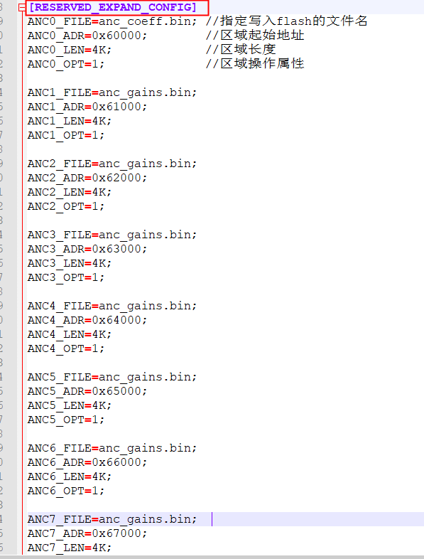
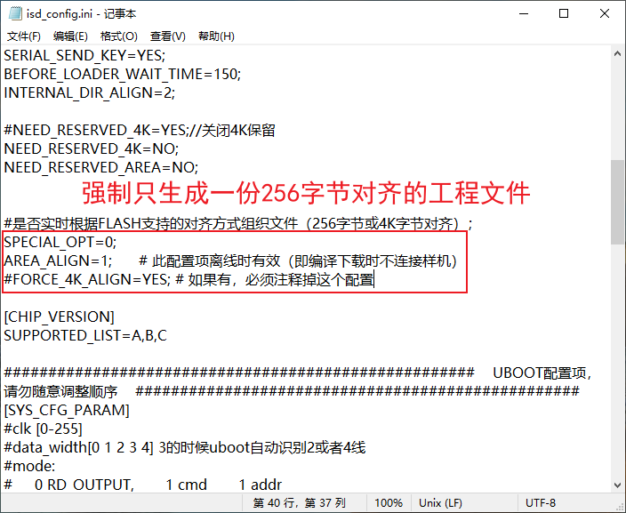
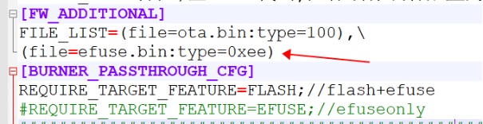

6.1. Common isd_config.ini Settings and Programming-Related Features
For more details about the isd_config.ini configuration file, see The isd_config.ini Configuration File
6.1.1. Flash SPI parameter configuration
isd_config.ini supports configuring the SPI parameters of the flash, as follows:
[SYS_CFG_PARAM]
SPI = 2_3_0_0;
Parameters:
[SYS_CFG_PARAM]
SPI = X0_X1_X2_X3;
X0: the SPI data width. Configure it according to the actual flash package; the default is usually fine:
0: SPI uses 1-wire mode; data is written and read on the same IO0/SO line
1: SPI uses standard two-wire mode; data is written on the IO0/SO line and read on the IO1/SI line
2: SPI uses 2-wire mode; data is written on the IO0/SO line and read on the IO0/SO and IO1/SI lines
4: SPI uses 4-wire mode; data is written on the IO0/SO line and read on the IO0/SO, IO1/SI, IO2 (flash WP) and IO3 (flash HOLD) linesX1: the SPI CLK divider value. For example, if the chip system clock runs at 48M and this is set to 3, the SPI clock is 48/(3+1)=12M:
X2: the command used to read data from the flash. The default is usually fine; for details, see the manual of the flash used with the chip:
0: FAST_READ_OUTPUT_MODE
1: FAST_READ_IO_MODE
2: FAST_READ_IO_CONTINUOUS_READ_MODEX3: which group of SPI IO pins to use
0: use the first group
1: use the second group
Note
Some chips do not support 4-wire mode or the FAST_READ_IO_MODE read mode.
If a programming failure or verification failure is reported during programming, check whether the corresponding SPI configuration is correct.
6.1.2. Configuration for programming custom resource files
To use the programmer to program the files "anc_coeff.bin" and "anc_gains.bin", which are in the same directory as isd_config.ini, to specified locations in the chip flash, configure them as shown in Configuration for programming custom resource files.

Configuration for programming custom resource files
If the [RESERVED_CONFIG] section contains more than 6 resources, an error is reported when you run the batch file. Put the resource files in the [RESERVED_EXPAND_CONFIG] section instead, configured as shown in Configuration for programming more than 6 custom resource files.

Configuration for programming more than 6 custom resource files
Note
Several resource entries can reference a file with the same file name, but the XXX_FILE names must not be the same.
Addresses can be changed, for example to ANC0_ADR=AUTO; (automatic address). For details of the options in the [RESERVED_CONFIG] section, see the section "[RESERVED_CONFIG] section options".
6.1.3. Configuring flash parameter programming and testing that protection parameters take effect
1. Tool version update: For the SDK to support the OTP_CFG configuration, the related tools must be updated to the following versions (or later).
Tool |
Minimum version |
Description |
|---|---|---|
isd_download.exe |
4.2.54 |
|
1-to-2 programmer |
2.27.7 |
|
1-to-8 programmer |
3.1.22 |
2. Chip models supported by the programmer and the isd_config.ini configuration
For the following chips, add the FLASH_WRITE_PROTECT=YES setting to the [BURNER_PASSTHROUGH_CFG] section of isd_config.ini. During programming, the flash write protection parameters are then programmed into the specified area and the protection is tested for effectiveness.
[BURNER_PASSTHROUGH_CFG]
FLASH_WRITE_PROTECT=YES;
To skip flash parameter programming and the effectiveness test, delete the FLASH_WRITE_PROTECT field, or add the FLASH_WRITE_PROTECT=NO setting to the [BURNER_PASSTHROUGH_CFG] section of isd_config.ini.
[BURNER_PASSTHROUGH_CFG]
FLASH_WRITE_PROTECT=NO;
Chip model |
Required isd_config.ini configuration |
|---|---|
AC632N, AE632N |
FLASH_WRITE_PROTECT=YES |
AC695X, AC635N, AC6083, AE695N |
FLASH_WRITE_PROTECT=YES |
AC696X, AC636N, AC608N |
FLASH_WRITE_PROTECT=YES |
AC702N |
FLASH_WRITE_PROTECT=YES |
AC706N |
FLASH_WRITE_PROTECT=YES |
AD14N, AC104N |
FLASH_WRITE_PROTECT=YES |
AD15N, AE15N |
FLASH_WRITE_PROTECT=YES |
AC700N, JL700N |
FLASH_WRITE_PROTECT=YES |
AC701N, JL701N |
FLASH_WRITE_PROTECT=YES |
For the following chips, add the OTP_CFG_SIZE=512; setting to the [EXTRA_CFG_PARAM] section of isd_config.ini. Only then are the protection parameters written to the flash and the effectiveness test performed during programming; otherwise programming reports an error.
[EXTRA_CFG_PARAM]
OTP_CFG_SIZE=512;
Chip model |
Required isd_config.ini configuration |
|---|---|
AW30N |
OTP_CFG_SIZE=512 |
JL703N |
OTP_CFG_SIZE=512 |
AC700N, JL700N |
OTP_CFG_SIZE=512 |
AC704N |
OTP_CFG_SIZE=512 |
AC705N |
OTP_CFG_SIZE=512 |
AC706N |
OTP_CFG_SIZE=512 |
JL708N |
OTP_CFG_SIZE=512 |
AC82N, AD18N |
OTP_CFG_SIZE=512 |
AC129N,AD12N |
OTP_CFG_SIZE=512 |
AC701N, JL701N |
OTP_CFG_SIZE=512 |
JL709N, AC689N |
OTP_CFG_SIZE=512 |
AC710N |
OTP_CFG_SIZE=512 |
AC792N |
OTP_CFG_SIZE=512 |
AD24N |
OTP_CFG_SIZE=512 |
AC707N, AW34N |
OTP_CFG_SIZE=512 |
Note
The value 512 in OTP_CFG_SIZE=512; can vary; it depends on the size of the configuration information of the flash parameters currently in use.
For AC707N, AW34N, AC710N and AD24N chips, the recommended minimum value is 128.
For other models, the recommended minimum value is 256. In general, the default value configured in the standard SDK is fine.
3. Programming the generated .fw file into the chip: write protection effectiveness test
Use a 1-to-2 programmer or a 1-to-8 programmer to program the FW file that is configured with the flash parameter programming function into the chip flash.
During programming, the programmer tests once whether the write protection of the chip flash takes effect. The firmware data is programmed into the chip only if the test passes.
After successful programming, if printing is enabled in the SDK, a message indicating that write protection is in effect is printed, as shown below: 
5. Enabling flash write protection during development
To enable FLASH write protection during development and debugging, see "Enabling the write protection, DTR and multi-algorithm authorization features"
6.1.4. Configuration for generating 256- and 4096-byte aligned files
1. About 256- and 4096-byte aligned files: All NOR flash on the market supports 4K-byte erase operations, and some also support 256-byte erase. Our programming files can therefore be organized with either 4K-byte or 256-byte alignment.
The same product may be programmed with flash chips that use different alignments. During firmware download, the download tool selects the alignment in real time according to the smallest erase unit supported by the device's FLASH and organizes the FLASH data accordingly. This feature can be disabled. Note:
(1) 256-byte alignment saves flash space. (2) If the solution needs to support online upgrades, the programming files before and after the upgrade must use the same alignment.
2. ini configuration for generating a FW that contains only the 4096-byte aligned programming file, as shown in the red box

3. ini configuration for generating a FW that contains only the 256-byte aligned programming file, as shown in the red box. Then connect a chip whose flash supports 256-byte erase to the Forced Upgrade Tool; once it is recognized, run the batch file to generate the FW.

4. How to force generation of a 256-byte aligned FLASH BIN: add the "SPECIAL_OPT=0" and "AREA_ALIGN=1" configuration items. This method is not recommended.
SPECIAL_OPT=0;
AREA_ALIGN=1; // This option takes effect offline, i.e. when no device is connected during build and download
#FORCE_4K_ALIGN=YES; // If present, this setting must be commented out

5. To generate a FW that contains both the 256- and the 4096-byte aligned programming files, remove the following part and run the batch file.
#SPECIAL_OPT=0;
#FORCE_4K_ALIGN=YES; # If present, this setting must be commented out
6.1.5. Configuration for passthrough programming of files such as efuse.bin
Add the "efuse.bin" file to be programmed to isd_config.ini as shown below; "efuse.bin" is located in the same directory as the isd_config.ini file.
[FW_ADDITIONAL]
FILE_LIST=(file=efuse.bin:type=0xee)
As shown in the figure:

Note
FILE_LIST supports multiple files, for example: FILE_LIST=(file=ota.bin:type=100),(file=efuse.bin:type=0xee)
AC702N, AC704N, AC705N, AC129N and AD12N must be configured for either FLASH mode or ROM mode, as follows:
[BURNER_PASSTHROUGH_CFG]
REQUIRE_TARGET_FEATURE=FLASH;//flash+efuse
#REQUIRE_TARGET_FEATURE=EFUSE;//efuse only
6.1.6. Configuration for programming the LRC calibration value into flash
For chips in crystal-less solutions, configure the LRC calibration value to be written into the FLASH UBOOT area (it is written only if the LRC clock deviation exceeds 0.5%), as follows:
[SYS_CFG_PARAM]
LRC=-1; //Configuration: write the LRC calibration value to flash
6.1.7. Chip version matching between the programmer and the SDK configuration
Add the chip versions to be supported (versions A to P) to isd_config.ini as shown in the figure
[CHIP_VERSION]
SUPPORTED_LIST=A,B,C,D,M,N,O,P
If the programmer reports a version error during programming, possible causes are:
1. The section above does not include support for this chip version
2. Or the programmer does not allow this version to be programmed
To change this, contact a Jieli engineer to enable programming of this version according to the actual SDK
For more explanation, see "Version Mismatch Error"